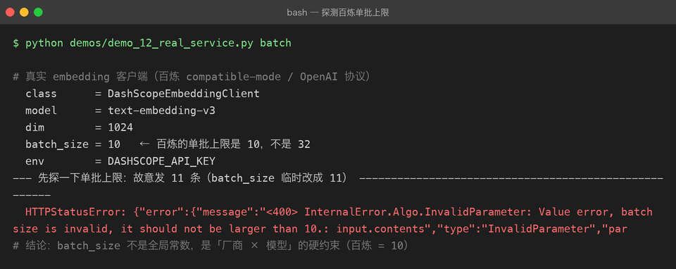
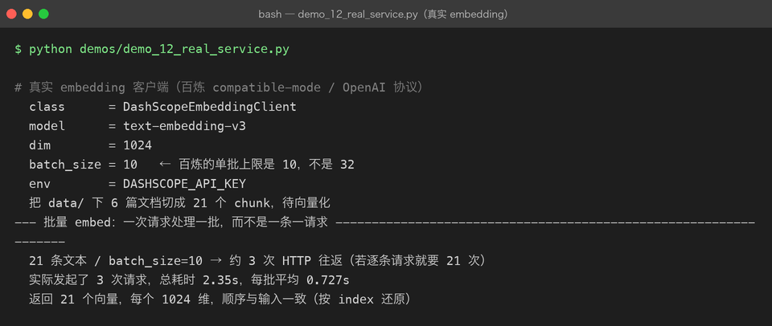
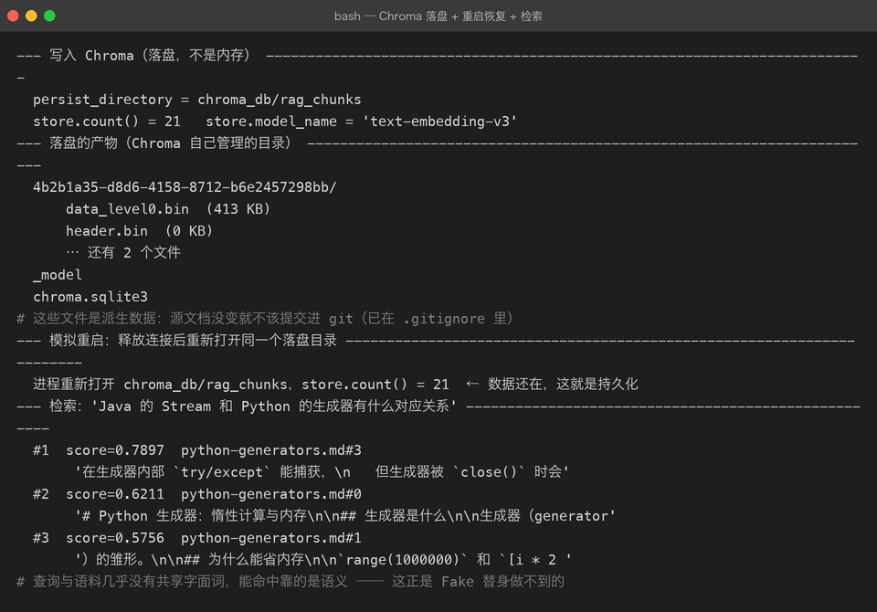
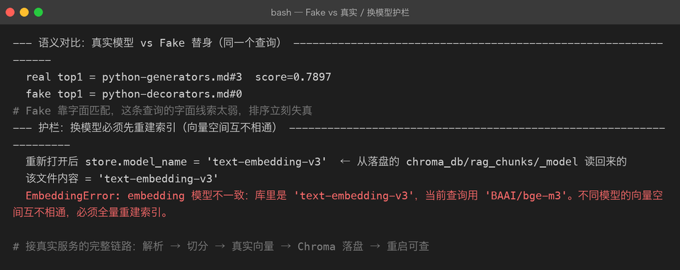

第十一章：接真实服务
目标：把前面十章的「离线替身」换成真实 API，把「内存库」换成持久化向量库。
这一章不是多写几个类，而是处理只有「真的跑起来」才会撞见的边界问题。
1. 本章目标
- 接入真实 embedding：
DashScopeEmbeddingClient调阿里云百炼text-embedding-v3（1024 维，与 bge-m3 同族）。 - 接入持久化向量库：
ChromaVectorStore落盘到chroma_db/rag_chunks，验证重启后数据还在。 - 把这次接线遇到的 6 个真实坑，变成可复现的代码与截图。
2. 为什么换真实服务不是「改个 URL」那么简单
前十章里：
FakeEmbeddingClient用字符 n-gram 哈希生成 64 维向量；InMemoryVectorStore用 NumPy 暴力算余弦；- 整套链路跑在离线环境里，113 项 pytest 全绿。
这证明了一件事：接口契约是对的。但它没有证明三件事：
- 真实 API 的批量上限、响应结构、错误码各家不同；
- 真实 embedding 才有语义能力（Fake 靠字面，容易跑偏）；
- 真实向量库对 metadata、持久化、模型一致性的要求远高于内存库。
所以这一章的任务是：在跑通的同时，把「跑不通」的那些点记录下来。
3. 技术选型
3.1 Embedding：百炼 text-embedding-v3
用户没有配置 SILICONFLOW_API_KEY，本机只有 DASHSCOPE_API_KEY（阿里云百炼）。
百炼的 text-embedding-v3 关键参数：
| 参数 | 值 | 说明 |
|---|---|---|
| 默认维度 | 1024 | 与 BAAI/bge-m3 对齐，向量空间互通 |
| 单批上限 | 10 条 | 坑 1 的核心证据 |
| 协议 | OpenAI compatible-mode /v1/embeddings | 请求/响应结构与 SiliconFlow 相同 |
| 环境变量 | DASHSCOPE_API_KEY | 不写代码，只读环境变量 |
如果你手头是 SiliconFlow key，只需要把
create_embedding_client("siliconflow")即可； 本章抽取了_OpenAIStyleEmbeddingClient骨架，就是为了换厂商时只改 3 行。
3.2 向量库：Chroma 持久化
ChromaVectorStore已在第四章写好，但前面十章一直用的是InMemoryVectorStore（不依赖chromadb这个重依赖）。- 本章启用持久化目录
chroma_db/rag_chunks/，并被.gitignore排除（向量库是派生数据）。
4. 代码改动概览
4.1 embedding.py：抽出 OpenAI 兼容协议骨架
class _OpenAIStyleEmbeddingClient(BaseEmbeddingClient):
"""OpenAI /v1/embeddings 协议的公共骨架（分批 / 按 index 排序 / 429 退避）。"""
BASE_URL: str = ""
ENV_VAR: str = "" # 兜底环境变量名
model_name: str = ""
dim: int = 0
DEFAULT_BATCH_SIZE: int = 32
MAX_RETRIES: int = 3
def __init__(self, api_key=None, model="", batch_size=None):
key = api_key or os.getenv(self.ENV_VAR, "")
...
class SiliconFlowEmbeddingClient(_OpenAIStyleEmbeddingClient):
BASE_URL = "https://api.siliconflow.cn/v1/embeddings"
ENV_VAR = "SILICONFLOW_API_KEY"
model_name = "BAAI/bge-m3"
dim = 1024
DEFAULT_BATCH_SIZE = 32
class DashScopeEmbeddingClient(_OpenAIStyleEmbeddingClient):
BASE_URL = "https://dashscope.aliyuncs.com/compatible-mode/v1/embeddings"
ENV_VAR = "DASHSCOPE_API_KEY"
model_name = "text-embedding-v3"
dim = 1024
DEFAULT_BATCH_SIZE = 10 # 坑 1 的修复关键设计决策：不要把「协议细节」和「厂商常量」混在一起写两遍。
SiliconFlow、百炼、OpenAI、自己用 vLLM 部署的 bge，都是同一套 /v1/embeddings 协议。差异只有：
BASE_URLmodel_nameDEFAULT_BATCH_SIZEENV_VAR
所以指数退避、按 index 还原顺序、超长截断、错误分层这些逻辑只写一份。子类只需要声明 5 个类属性 —— 这是接入真实服务时最值钱的 20 行代码。
4.2 store.py：Chroma 真实落盘的 3 个补丁
| 补丁 | 坑 | 修复 |
|---|---|---|
_to_scalar | Chroma metadata 只接受 str/int/float/bool，但 MdParser 把 headings 存成 list | list → ";" 拼接；None 丢弃；dict → JSON 字符串 |
_model sidecar 文件 | 进程重启后 model_name 为空，check_model 护栏失效 | 把模型名写进 chroma_db/<collection>/_model，启动时读回 |
expand_paths 后缀白名单 | Chroma 落盘目录若放在 data/ 下，会被当成待解析文档 | 只保留 .md/.txt/.pdf/.docx 后缀 |
5. 运行方式
# 1. 安装 chromadb（如果还没装）
cd projects/04-rag
.venv/bin/pip install "chromadb>=0.5"
# 2. 配置 key
export DASHSCOPE_API_KEY=sk-xxxx
# 3. 跑单个探针或全流程
.venv/bin/python demos/demo_12_real_service.py batch
.venv/bin/python demos/demo_12_real_service.py注意：
chroma_db/rag_chunks/是派生数据，不会进 git；但不要把派生目录放在data/下，否则会被摄入扫描到。
6. 真实运行截图
6.1 探测百炼单批上限

这是真实服务的第一课：第 11 条文本会直接返回 400 —— batch size is invalid, it should not be larger than 10。
所以 DashScopeEmbeddingClient.DEFAULT_BATCH_SIZE = 10，而 SiliconFlowEmbeddingClient 可以保持 32。
工程纪律：
batch_size不是全局常量，是「厂商 × 模型」的硬约束。
6.2 真实 Embedding 链路

真实模型信息：
- 维度 1024；
- 21 个 chunk 只发了 3 次 HTTP 请求（按 batch_size=10 切批）；
- 返回顺序与输入一致 —— 这靠响应里的
index字段重新排序实现。
6.3 Chroma 落盘 + 重启恢复 + 语义检索

关键证据：
persist_directory = chroma_db/rag_chunks，落盘产物包括.bin、.sqlite3和自定义的_modelsidecar；- 进程重新打开同一目录后
store.count() = 21—— 数据还在； - 查询
"Java 的 Stream 和 Python 的生成器有什么对应关系"命中python-generators.md，而且查询与语料几乎没有共享字面词，靠的是语义相似度。
6.4 Fake vs 真实 + 换模型护栏

- Fake 翻车：同一查询，真实模型 top1 是
python-generators.md#3（score=0.7897），Fake 替身却排到了python-decorators.md#0。 - 换模型护栏：
store.model_name从_modelsidecar 文件恢复成text-embedding-v3，用BAAI/bge-m3查询时直接抛错，防止两个向量空间混用。
7. 六个只有真跑才会踩的坑
坑 1：厂商单批上限不同
现象：batch_size=32 在百炼直接 400。
修复：
DashScopeEmbeddingClient.DEFAULT_BATCH_SIZE = 10- 分批逻辑在父类
_OpenAIStyleEmbeddingClient.embed()里，子类只改数字
启示：真实部署时要去读各家文档的 max_batch_size，并把它做成可配置项。
坑 2：真实 embedding 是否归一化
现象：百炼返回的向量 |v| = 1.0。
修复：没有修复，但这是一个可验证的事实。输出里打印了模长，证明 cosine_similarity 可以降级成点积。
启示：不同厂商的向量归一化策略可能不同，依赖点积当余弦用前要先验证。
坑 3：metadata 里的 list 进不了 Chroma
现象：
ValueError: Expected metadata list value for key 'headings' to be non-empty in upsert.根因：MdParser 把 Markdown 标题存成 headings: [...]，Chroma metadata 只接受标量。
修复：
def _to_scalar(value):
if value is None: return None
if isinstance(value, (list, tuple)): return ";".join(str(x) for x in value) or None
if isinstance(value, dict): return json.dumps(value)
...坑 4：模型名必须随库持久化
现象：进程重启后 store.model_name 为空，用错模型查询不会被拦。
根因：上一版把 model_name 只放在实例属性上。
修复：
- 写 sidecar 文件
chroma_db/rag_chunks/_model - 启动时读回
clear()时删除
为什么不用
collection.modify(metadata=...)：Chroma 把hnsw:space当成距离函数，调用modify会报Changing the distance function of a collection ... is not supported。
坑 5：落盘目录别被摄入扫描到
现象：expand_paths(["data/"]) 把 data/chroma-real/<uuid>/data_level0.bin 当成待解析文档，然后报错：
IngestionError: 不支持的格式: '.bin'修复：
- 把落盘目录放到
data/外面：chroma_db/rag_chunks/ - 给
expand_paths加后缀白名单过滤，只扫.md/.txt/.pdf/.docx
坑 6：Chroma 返回的是 distance，不是 similarity
现象：直接拿 Chroma 的 score 当余弦，排序方向会反。
修复：
similarity_from_distance = lambda d: 1.0 - float(d)这在第四章已经写好，本章验证它在真实数据上仍然成立。
8. 新增测试
本章新增了 7 项离线测试，全部不触网：
test_to_scalar_把不能落盘的元数据压成标量
test_chroma_元数据里的list不再炸
test_chroma_重启后还记得模型名
test_expand_paths_按后缀白名单过滤
test_supported_extensions_来自解析器注册表
test_dashscope_没有key直接报错
test_dashscope_单批上限比siliconflow更小合计：120 passed in 2.09s。
9. 本章产出文件
src/rag/embedding.py— 抽出_OpenAIStyleEmbeddingClient，新增DashScopeEmbeddingClientsrc/rag/store.py— 元数据降维、_modelsidecar、从 sidecar 恢复模型名src/rag/parsing.py—expand_paths后缀白名单过滤demos/demo_12_real_service.py— 真实服务全流程 demotests/test_store.py— 覆盖上述 7 条新增行为的单测milestones/11-real-service-integration.md— 本章文档assets/real-*.png— 4 张真实运行截图
10. 下一步
- 接入真实 LLM：把
RAGService.ask()后面的 LLM 从FakeLLMClient换成 DeepSeek / Qwen。 - Web API：复用 Project 03 的 FastAPI + SSE 模式，给 RAG 加上
POST /ask接口。 - 真实评估：用真实 embedding + Chroma 跑 30 条 EvalCase，计算 Hit Rate@k 与 MRR。
- 监控与可观测：记录每次检索的 latency、召回 top-k 分数分布、调用次数。